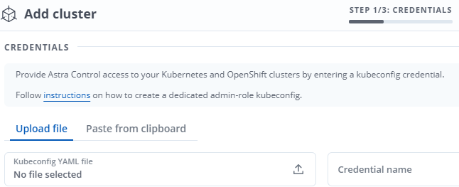

要求變更文件
要求變更文件 編輯此頁面
編輯此頁面 瞭解如何作出貢獻
瞭解如何作出貢獻設定Astra控制中心
Astra Control Center支援ONTAP 並監控將支援及Astra Data Store做為儲存後端。安裝Astra Control Center、登入UI並變更密碼之後、您將需要設定授權、新增叢集、管理儲存設備及新增儲存區。
新增Astra Control Center授權
您可以使用UI或新增授權 "API" 以獲得完整的Astra控制中心功能。若無授權、您使用Astra Control Center的使用僅限於管理使用者及新增叢集。
如需如何計算授權的詳細資訊、請參閱 "授權"。

|
若要更新現有的評估或完整授權、請參閱 "更新現有授權"。 |
Astra Control Center授權會使用Kubernetes CPU單元來測量CPU資源。授權必須考量指派給所有受管理Kubernetes叢集之工作節點的CPU資源。新增授權之前、您必須先從取得授權檔案（NLF） "NetApp 支援網站"。
您也可以試用Astra Control Center搭配評估授權、從下載授權之日起90天內使用Astra Control Center。您可以註冊以免費試用 "請按這裡"。
|
|
如果您的安裝量成長到超過授權的CPU單元數量、Astra Control Center會防止您管理新的應用程式。超過容量時會顯示警示。 |
當您從下載Astra Control Center時 "NetApp 支援網站"下載NetApp授權檔案（NLF）。請確定您有權存取此授權檔案。
-
登入Astra Control Center UI。
-
選擇*帳戶*>*授權*。
-
選擇*新增授權*。
-
瀏覽至您下載的授權檔案（NLF）。
-
選擇*新增授權*。
「帳戶>*授權*」頁面會顯示授權資訊、到期日、授權序號、帳戶ID及使用的CPU單位。
|
|
如果您擁有評估授權、請務必儲存您的帳戶ID、以免在Astra Control Center故障時發生資料遺失（如果您未傳送ASUP）。 |
新增叢集
若要開始管理應用程式、請新增Kubernetes叢集、並將其當作運算資源來管理。您必須為Astra Control Center新增叢集、才能探索Kubernetes應用程式。對於Astra Data Store、您想要新增Kubernetes應用程式叢集、其中包含使用Astra Data Store所配置磁碟區的應用程式。

|
我們建議Astra Control Center先管理部署於上的叢集、再將其他叢集新增至Astra Control Center進行管理。需要管理初始叢集、才能傳送Kubmetrics資料和叢集相關資料、以供進行度量和疑難排解。您可以使用*新增叢集*功能、以Astra控制中心來管理叢集。 |
|
|
當Astra Control管理叢集時、它會追蹤叢集的預設StorageClass。如果您使用「kubecll」命令變更StorageClass、Astra Control會還原變更。若要變更由Astra Control管理之叢集中的預設StorageClass、請使用下列其中一種方法：
|
-
新增叢集之前、請先檢閱並執行必要的 "必要工作"。
-
在Astra Control Center UI的* Dashboard 中、選取「叢集」區段中的「Add*」。
-
在打開的* Add Cluster.yaml視窗中、上傳「kubeconfig．yaml」檔案、或貼上「kubeconfig．yaml」檔案的內容。
「kubeconfig．yaml」檔案應包含*一個叢集*的叢集認證資料。 

如果您建立自己的「kubeconfig」檔案、您應該只定義其中*一個*內容元素。請參閱 "Kubernetes文件" 以取得建立「Kbeconfig」檔案的相關資訊。 -
提供認證名稱。根據預設、認證名稱會自動填入為叢集名稱。
-
選擇*設定儲存設備*。
-
選取要用於此Kubernetes叢集的儲存類別、然後選取* Review *。
您應該選擇以ONTAP 不受資料儲存或Astra Data Store支援的Trident儲存類別。 
-
檢閱資訊、如果一切正常、請選取*新增叢集*。
叢集會進入*探索*狀態、然後變更為*執行中*。您已成功新增Kubernetes叢集、現在正在Astra Control Center中進行管理。
|
|
在Astra Control Center中新增要管理的叢集之後、可能需要幾分鐘的時間來部署監控操作員。在此之前、通知圖示會變成紅色、並記錄*監控代理程式狀態檢查失敗*事件。您可以忽略這一點、因為當Astra Control Center取得正確狀態時、問題就能解決。如果幾分鐘內仍無法解決問題、請前往叢集、然後執行「ocGet pod -n NetApp-監 控」作為起點。您需要查看監控操作員記錄、以偵錯問題。 |
新增儲存後端
您可以新增儲存後端、以便Astra Control管理其資源。您可以在託管叢集上部署儲存後端、或使用現有的儲存後端。
將Astra Control中的儲存叢集管理為儲存後端、可讓您在持續磁碟區（PV）與儲存後端之間建立連結、以及取得額外的儲存指標。
-
您已新增Kubernetes應用程式叢集和基礎運算叢集。
在您新增適用於Astra Data Store的Kubernetes應用程式叢集、並由Astra Control管理之後、叢集會在探索到的後端清單中顯示為「Unmanaged」。接下來、您必須新增包含Astra Data Store的運算叢集、並作為Kubernetes應用程式叢集的基礎。您可以從UI的*後端*執行此動作。選取叢集的「動作」功能表、選取「管理」、然後選取 "新增叢集"。在「Unmanaged」叢集狀態變更為Kubernetes叢集名稱之後、您可以繼續新增後端。
-
您有 "已上傳您要部署的安裝套件版本" 至Astra Control可存取的位置。
-
您已新增要用於部署的Kubernetes叢集。
-
您已上傳 Astra Data Store授權 部署至Astra Control可存取的位置。
部署儲存資源
您可以部署新的Astra Data Store、並管理相關的儲存後端。
-
從儀表板或後端功能表瀏覽：
-
從*儀表板*：從「資源摘要」中、從「儲存後端」窗格中選取連結、然後從「後端」區段中選取「新增」。
-
從*後端*：
-
在左側導覽區域中、選取*後端*。
-
選取*「Add*」。
-
-
-
在「部署」索引標籤中選取「* Astra Data Store*部署」選項。
-
選取要部署的Astra Data Store套件：
-
輸入Astra Data Store應用程式的名稱。
-
選擇您要部署的Astra Data Store版本。
如果您尚未上傳想要部署的版本、可以使用*新增套件*選項、或結束精靈並使用 "套件管理" 上傳安裝套裝組合。
-
-
選取您先前已上傳的Astra Data Store授權、或使用*新增授權*選項上傳授權以搭配應用程式使用。
具有完整權限的Astra Data Store授權會與Kubernetes叢集相關聯、而且這些相關的叢集應該會自動顯示。如果沒有託管叢集、您可以選取*新增叢集*選項、將其中一個新增至Astra Control管理。對於Astra Data Store授權、如果授權與叢集之間沒有關聯、您可以在精靈的下一頁定義此關聯。 -
如果您尚未將Kubernetes叢集新增至Astra Control管理、則必須從* Kubernetes叢集*頁面執行此動作。從清單中選取現有的叢集、或選取*新增基礎叢集*、將叢集新增至Astra Control管理。
-
選取Kubernetes叢集的部署範本大小、以提供Astra Data Store的資源。
挑選範本時、請針對較大的工作負載選擇具有較多記憶體和核心的較大節點、或針對較小的工作負載選擇較多節點。您應該根據授權允許的內容來選取範本。每個範本選項都會針對每個節點的記憶體、核心和容量、建議符合範本模式的合格節點數量。 -
設定節點：
-
新增節點標籤以識別支援此Astra Data Store叢集的工作節點集區。
在開始部署或部署之前、必須將標籤新增至叢集中用於Astra Data Store部署的各個節點。 -
手動設定每個節點的容量（GiB）、或選取允許的最大節點容量。
-
設定叢集中允許的節點數目上限、或允許叢集上的節點數目上限。
-
-
（僅限Astra Data Store完整授權）輸入您要用於Protection Domain的標籤金鑰。
為每個節點的金鑰建立至少三個唯一的標籤。例如、如果您的金鑰是「astra.datastore.protection.domain`」、您可以建立下列標籤：「astra.datastore.protection.domain=domain1`, astra.datastore.protection.domain=domain2」和「astra.datastore.protection.domain=domain3`」。 -
設定管理網路：
-
輸入Astra Data Store內部管理的管理IP位址、該位址與工作節點IP位址位於同一子網路。
-
選擇使用相同的NIC進行管理和資料網路、或分別設定。
-
輸入資料網路IP位址集區、子網路遮罩和閘道、以供儲存存取。
-
-
檢查組態、然後選取*部署*開始安裝。
成功安裝之後、後端會在後端清單中以「Available（可用）」狀態顯示、並顯示作用中的效能資訊。
|
|
您可能需要重新整理頁面、以便顯示後端。 |
使用現有的儲存後端
您可以將探索到ONTAP 的功能區或Astra Data Store儲存後端納入Astra Control Center管理。
-
從儀表板或後端功能表瀏覽：
-
從*儀表板*：從「資源摘要」中、從「儲存後端」窗格中選取連結、然後從「後端」區段中選取「新增」。
-
從*後端*：
-
在左側導覽區域中、選取*後端*。
-
從託管叢集的探索後端選取*管理*、或選取*新增*來管理其他現有後端。
-
-
-
選取*使用現有*索引標籤。
-
視後端類型而定、執行下列其中一項：
-
* Astra資料儲存區*：
-
選擇* Astra Data Store*。
-
選取受管理的運算叢集、然後選取* Next*。
-
確認後端詳細資料、然後選取*「Add storage backend*（新增儲存後端*）」。
-
-
《》*：ONTAP
-
選擇* ONTAP 《》《*》。
-
輸入ONTAP 該系統的管理員認證資料、然後選取* Review *。
-
確認後端詳細資料、然後選取*「Add storage backend*（新增儲存後端*）」。
-
-
後端會以「可用」狀態顯示在清單中、並顯示摘要資訊。
|
|
您可能需要重新整理頁面、以便顯示後端。 |
新增儲存庫
如果您想要備份應用程式和持續儲存設備、或是想要跨叢集複製應用程式、則必須新增物件存放區資源庫供應商。Astra Control會將這些備份或複製儲存在您定義的物件存放區中。
當您新增貯體時、Astra Control會將一個貯體標示為預設的貯體指標。您建立的第一個儲存區會成為預設儲存區。
如果您要將應用程式組態和持續儲存設備複製到同一個叢集、則不需要儲存庫。
請使用下列任一種貯體類型：
-
NetApp ONTAP 產品S3
-
NetApp StorageGRID 產品S3
-
一般S3
|
|
雖然Astra Control Center支援Amazon S3做為通用S3儲存區供應商、但Astra Control Center可能不支援所有聲稱Amazon S3支援的物件儲存區廠商。 |
如需如何使用Astra Control API新增儲存區的指示、請參閱 "Astra Automation和API資訊"。
-
在左側導覽區域中、選取*鏟斗*。
-
選取*「Add*」。
-
選取貯體類型。
新增儲存庫時、請選擇正確的儲存庫供應商、並提供該供應商的適當認證資料。例如、UI接受NetApp ONTAP S3作為類型並接受StorageGRID 驗證、但這將導致所有未來使用此儲存庫的應用程式備份與還原失敗。 -
建立新的貯體名稱、或輸入現有的貯體名稱和選用說明。
庫位名稱和說明會顯示為備份位置、您可以在建立備份時稍後再選擇。此名稱也會在保護原則組態期間顯示。 -
輸入S3端點的名稱或IP位址。
-
如果您希望此儲存區成為所有備份的預設儲存區、請勾選「將此儲存區設為此私有雲端的預設儲存區」選項。
此選項不會出現在您所建立的第一個儲存區。 -
請繼續新增 認證資訊。
-
新增S3存取認證
隨時新增S3存取認證。
-
從「庫位」對話方塊中、選取「新增」或「使用現有」索引標籤。
-
在Astra Control中輸入認證與其他認證不同的名稱。
-
從剪貼簿貼上內容、輸入存取ID和秘密金鑰。
-
接下來呢？
現在您已經登入Astra Control Center並新增叢集、就可以開始使用Astra Control Center的應用程式資料管理功能。